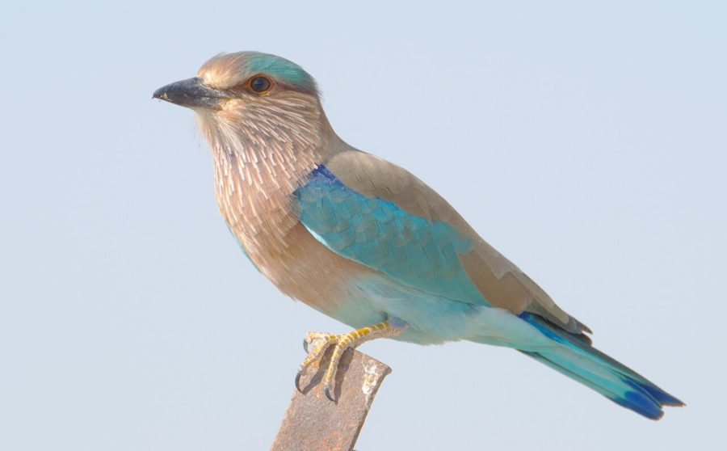

नीलकंठIndian Roller
Coracias benghalensis · Coraciidae · BRD-0003

- Scientific name
- Coracias benghalensis (Linnaeus, 1758)
- Family
- Coraciidae
- Hindi
- नीलकंठ
- Status here
- native
- IUCN
- LC
When to look कब देखें
Season not recorded.
नीलकंठ / Indian Roller
Coracias benghalensis (Linnaeus, 1758) — Coraciidae
नीलकंठ — बिजली के तार पर बैठा यह पक्षी ऊपर से थोड़ा फीका लगता है — भूरी पीठ। फिर वह शिकार के लिए गिरता है और पंख खुलते हैं: अचानक फ़िरोज़ी, नीले और बैंगनी का शानदार विस्फोट जो उतनी ही तेज़ी से गायब हो जाता है। यह ग्रामीण इलाकों का सबसे सुंदर और शुभ आश्चर्य है।
हिंदी परिचय Hindi Overview
नीलकंठ (Coracias benghalensis) पूर्वी उत्तर प्रदेश के खुले खेतों, सड़कों और गाँवों में सबसे आसानी से दिखने वाले पक्षियों में से एक है। यह बिजली के तारों, पेड़ की नंगी डालियों और खम्भों पर बैठकर नीचे देखता रहता है — अपने शिकार की प्रतीक्षा में।
हिंदू परम्परा में नीलकंठ अत्यन्त पवित्र है। "नीलकंठ" का अर्थ है "नीले गले वाला" — और यही शिव का एक नाम भी है। दशहरे के दिन नीलकंठ के दर्शन अत्यन्त शुभ माने जाते हैं।
कीड़े-मकड़े खाने के कारण किसान इसे अपना मित्र मानते हैं। इसकी उड़ान में "लुढ़कना" (rolling) इसका सबसे नाटकीय पहलू है — प्रजनन काल में नर हवा में ऊँचा उठता है, फिर एक तरफ से दूसरी तरफ लुढ़कते हुए नीचे आता है। यही इसे अंग्रेज़ी में "Roller" कहते हैं।
Quick Identification त्वरित पहचान
| Feature | Description |
|---|---|
| Size | 30–34 cm total length; stocky, compact build |
| Plumage (perched) | Rufous-brown back and head; pale lilac-purple throat and breast |
| Plumage (in flight) | Wing coverts brilliant turquoise-blue; flight feathers deep cobalt-blue with a broad turquoise band |
| Bill | Stout, slightly hooked, black |
| Favourite perch | Power lines, bare treetops, fence posts — exposed lookout posts over farmland |
| Behaviour | Sits motionless on perch, drops suddenly to ground to capture prey, then returns to a perch |
Field tip: A stocky, medium-sized bird perched quietly on a roadside wire, looking dull brown. When it flies, it suddenly displays a spectacular flash of brilliant turquoise and cobalt blue in its wings. It hunts by drop-diving onto large ground insects.
Morphology आकृति विज्ञान
Biometrics:
| Measurement | Range |
|---|---|
| Total length | 300–340 mm |
| Wing (flattened chord) | 180–200 mm |
| Tail | 115–125 mm |
| Tarsus | 25–28 mm |
| Bill (culmen from base) | 32–38 mm |
| Weight | 160–190 g |
Size: 32–34 cm. Weight 90–110 g. Wingspan ~70 cm.
Head: Rufous-brown crown. Face and throat pale lilac-purple, streaked whitish. Large dark eyes.
Back and wings (closed): Upperparts dull rufous-brown — the resting bird is unimpressive. This is cryptic camouflage.
Wings (open): The transformation. Wing coverts are brilliant turquoise. Primary flight feathers are deep cobalt-blue with a central band of brighter turquoise. The secondary feathers are dark blue. The combination creates the signature blue flash visible in flight.
Breast and belly: Pale lilac, streaked or washed brownish.
Tail: Blue with darker tips; central tail feathers project slightly.
Bill and legs: Bill stout, black, slightly hooked at tip — adapted for holding prey. Legs short, olive-grey.
Vocalisations. Three main call types:
- Contact and alarm call: A harsh, grating chack or loud, screeching krax repeated rapidly when alarmed or during territorial defense; frequency 1.5–3.5 kHz.
- Song: A series of rapid, metallic chuckles and rattles produced during courtship flights and territorial display.
- Flight chatter: Soft conversational grunts when gliding between perches.
हिंदी: बैठे हुए — भूरा। उड़ते हुए — फ़िरोज़ी, गहरा नीला, बैंगनी। यही इसकी पहचान है।
32–34 सेमी, 90–110 ग्राम।
The Rolling Display लुढ़कने का प्रदर्शन
The Indian Roller earns its English name from a spectacular courtship flight display performed by breeding males:
- The bird climbs steeply to 10–30 m above the ground
- At the peak, it begins a rapid side-to-side rocking (rolling) while calling loudly — "kraak kraak kraak"
- It then dives steeply downward while continuing to roll, wings flashing brilliantly
- At the bottom of the dive it pulls out and returns to its perch
This display is repeated many times and is visible from hundreds of metres away. The function is dual: attracting females and warning rival males. The rolling motion maximises the flash of the brilliant wing colours — making the display both louder and more visually intense than a straight flight would be.
Breeding season displays are most intense March–May. This is when the Roller is most active and conspicuous.
हिंदी — प्रदर्शन उड़ान:
प्रजनन काल में नर 10–30 मीटर ऊपर उड़ता है, फिर एक तरफ से दूसरी तरफ लुढ़कते हुए — "kraak kraak kraak" बोलते हुए — नीचे आता है।
यह उड़ान पंखों की नीली-फ़िरोज़ी चमक को दूर-दूर तक दिखाती है।
मादा को आकर्षित करने और प्रतिद्वंद्वी नरों को चेतावनी देने के लिए।
Cultural and Sacred Significance सांस्कृतिक और धार्मिक महत्व
नीलकंठ = शिव का नाम: In Hindu mythology, Shiva drank the halahala poison that emerged from the churning of the cosmic ocean (samudra manthan) to save the universe. The poison turned his throat blue — hence the name Neelkanth (नील = blue, कंठ = throat). The Indian Roller, with its blue throat and breast, became permanently associated with this act and with Shiva.
दशहरे का पक्षी (Dussehra bird): On Vijaya Dashami (Dussehra), seeing a Roller is considered the most auspicious omen. In many parts of UP, people specifically look for the Roller on Dussehra morning. Historically, kings would release a Roller at the start of military campaigns — seeing it fly was the auspicious signal to begin. This tradition has greatly protected the species — caging a Roller is widely considered sacrilegious.
State bird: The Indian Roller is the state bird of Andhra Pradesh, Karnataka, Odisha, and Telangana — testament to how widely revered it is across India.
हिंदी: नीलकंठ का नीला गला शिव के समुद्र-मंथन से जुड़ा है — इसीलिए पवित्र।
दशहरे के दिन नीलकंठ का दर्शन सबसे शुभ माना जाता है।
इस मान्यता ने इस पक्षी को सदियों से सुरक्षित रखा है।
Ecological Role पारिस्थितिक भूमिका
Sit-and-wait predator: The Roller perches at height, scans the ground below with sharp eyes, then drops to catch prey. It returns to the perch to beat larger prey against the branch before swallowing.
Diet:
- Large insects — grasshoppers, beetles, cicadas, mantids, large moths
- Small lizards — garden lizard juveniles (Calotes versicolor, REP-0001), small geckos
- Frogs and small toads
- Small snakes and blind worms
- Occasionally small rodents
Pest suppression: In agricultural fields, the Roller's preference for large grasshoppers, beetles, and locusts makes it a significant pest controller. Its position on power lines over agricultural land is essentially a free perch provided by infrastructure — from which it can survey large areas.
हिंदी: बिजली के तार से खेत देखता है — टिड्डे, भृंग, छिपकली, मेंढक खाता है।
कृषि क्षेत्रों में यह एक महत्वपूर्ण कीट नियंत्रक है।
Life Cycle / Phenology जीवन चक्र
Resident: Present year-round in eastern UP. Non-migratory.
Breeding:
- Season: March–June (peak April–May)
- Nest: Cavity nester — uses natural tree holes, old woodpecker holes, crevices in old buildings, and cavities in earthen embankments. Does not build a nest structure inside — lays on bare wood chips, debris, or bare ground.
- Clutch: 3–5 eggs, white, rounded. Laid directly on the cavity floor.
- Incubation: ~18 days, both parents.
- Chicks: Altricial — helpless at hatching, eyes closed. Both parents feed. Fledge at ~30 days.
Non-breeding: Maintains a loose territory year-round around a good hunting area with suitable nest holes. The same pair may reuse the same cavity year after year.
हिंदी: साल भर रहता है — प्रवासी नहीं।
मार्च-जून में प्रजनन। पेड़ या इमारत के खोखले में अंडे — कोई घोंसला नहीं बनाता।
3–5 सफेद अंडे; ~18 दिन में पैठते हैं।
Expected Locally स्थानीय रूप से अपेक्षित
Not a field record. Written from published accounts for eastern Uttar Pradesh. No confirmed local sighting yet — if you have seen it, that is what the atlas needs.
अभी तक स्थानीय पुष्टि नहीं। यह विवरण प्रकाशित स्रोतों से है, किसी अवलोकन से नहीं।
Extremely common across agricultural fields and roadsides throughout Basti district. Individual birds are regularly seen perching on telegraph wires, concrete poles, and dry branches of Peepal and Mango trees. During the peak breeding season (April–May), the spectacular rolling display and harsh kraak calls are frequently observed over open fields in the morning.
Distribution वितरण
Global range: Widespread across southern Asia, from southern Iraq and Iran through the Indian subcontinent (Pakistan, India, Nepal, Bhutan, Bangladesh) to Myanmar.
In India: Widespread throughout the plains and peninsular regions of India, extending up to about 1,500 m elevation in the foothills of the Himalayas.
In Uttar Pradesh: Common resident throughout all districts of Uttar Pradesh, heavily associated with agricultural areas, open scrub, and village environs.
In Basti district / eastern UP: Highly common year-round resident throughout Basti district; frequently seen perching on roadside power lines, fence posts, and dry branches over agricultural fields.
Range notes: No significant range changes documented.
Research Questions शोध प्रश्न
Anyone can investigate these | कोई भी इन प्रश्नों की जाँच कर सकता है
- How many Rollers are along a 5 km road near you? / 5 किलोमीटर सड़क पर कितने नीलकंठ हैं? — Count all seen perched or in flight on a fixed transect. Repeat monthly.
- Which perch type do they use most? / कौन सी जगह पर सबसे ज़्यादा बैठते हैं? — Power lines, bare trees, fence posts, or earthen mounds? Count by perch type across 20 observations.
- When does the rolling display begin each year? / हर साल प्रदर्शन उड़ान कब शुरू होती है? — Record the date of first rolling display. Multi-year data becomes a phenology record.
- What do they eat most frequently? / सबसे ज़्यादा क्या खाते हैं? — Watch a perched bird for 30 minutes and record every item caught.
- Do people see them on Dussehra? / क्या दशहरे के दिन लोग इन्हें देखते हैं? — Survey villagers: do they look for the Roller on Dussehra? Do they know the connection?
Similar Species मिलती-जुलती प्रजातियाँ
| Species | How to tell apart | हिंदी |
|---|---|---|
| Coracias temminckii (Purple Roller) | Different range — not found in UP | UP में नहीं मिलता |
| Common Kingfisher (Alcedo atthis) | Much smaller; brilliant blue back; always near water; dives into water | बहुत छोटा; पानी पर |
| White-throated Kingfisher (Halcyon smyrnensis) | Blue back and wings but white throat and rufous-red breast; chestnut head; larger bill | नीली पीठ लेकिन सफेद गला; बड़ी चोंच |
Field rule: A stocky, medium bird perching on a wire over open farmland, rufous-brown at rest, with a sudden flash of brilliant turquoise-blue when it flies — is the Indian Roller. Nothing else in eastern UP creates this effect.
Taxonomy & Classification वर्गीकरण
Original description. Coracias benghalensis was described by Carl Linnaeus in 1758 under the name Corvus benghalensis in his work Systema Naturae, Editio Decima, Reformata (p. 106). Type locality: "Bengal" (Benghala). The genus name Coracias is derived from the Greek korakias (a kind of crow or chough), alluding to its bill shape and size. The species name benghalensis refers to the Bengal region where the type specimen was collected.
Subspecies. Two subspecies are currently recognised:
| Subspecies | Authority | Range | Notes |
|---|---|---|---|
| C. b. benghalensis | (Linnaeus, 1758) | Pakistan, northern India (south to Vindhyas), Nepal, Bangladesh | UP subspecies; larger and paler than the southern form |
| C. b. indicus | Linnaeus, 1766 | Central and southern India, Sri Lanka | Smaller, with darker purple on throat and breast |
Birds in Basti district and eastern UP belong to the nominate form C. b. benghalensis.
Family and order placement. This species belongs to the order Coraciiformes and family Coraciidae (rollers). Coraciidae is a family of colourful near-passerine birds containing 12 species in 2 genera. The genus Coracias comprises 8 species distributed across Africa, Europe, and Asia.
Phylogenetic notes. Molecular studies (such as those by Johansson et al., 2008) show that the genus Coracias is monophyletic. The Indian Roller forms a sister group to the Indochinese Roller (Coracias affinis), which was historically treated as a subspecies of C. benghalensis but is now split based on plumage differences and genetic divergence.
IUCN status rationale. Assessed as Least Concern (LC). The species has a massive geographical distribution and a large population that, although experiencing localized declines due to pesticide use and loss of nesting sites, remains stable range-wide.
Photo Gallery फोटो गैलरी
फोटो निर्देश: बिजली के तार पर बैठे की फोटो आसान है। उड़ते समय की फोटो के लिए burst mode में लें — जब वह शिकार के लिए गिरे।
Photos needed आवश्यक फोटो
- [ ] Perched on power line — showing rufous back (बैठा हुआ — भूरी पीठ)
- [ ] In flight — wings open showing blue flash (उड़ते हुए — नीले पंख)
- [ ] Rolling display if caught on camera (प्रदर्शन उड़ान)
- [ ] Close-up of head showing lilac throat (सिर — बैंगनी गला)
- [ ] Nest hole if found (घोंसला — खोखले में)
Atlas Connections संबंधित प्रजातियाँ
- Oriental Garden Lizard — both perch on exposed posts and trees; Indian Roller occasionally takes small lizards (REP-0001)
- Stoll's Jewel Bug — Jewel Bug's structural colour (iridescence) is the same optical mechanism as the Roller's blue wing flash (INS-0003)
- Peepal — uses peepal as perch and nest cavity tree (FLR-0006)
- Black Drongo — similar open-field sit-and-wait insect predator using wires and bare perches (BRD-0005)
References संदर्भ
- Linnaeus, C. (1758). Systema Naturae per regna tria naturae. Editio Decima, Reformata. Laurentii Salvii, Holmiae, p. 106. [original description]
- Rasmussen, P.C. & Anderton, J.C. (2005). Birds of South Asia: The Ripley Guide. Smithsonian Institution, Washington.
- Grimmett, R., Inskipp, C. & Inskipp, T. (2011). Birds of the Indian Subcontinent. 2nd ed. Christopher Helm, London.
- Ali, S. & Ripley, S.D. (1997). Handbook of the Birds of India and Pakistan. Vol. 4. Oxford University Press, New Delhi.
- Johansson, U.S. et al. (2008). Phylogenetic relationships within Coraciiformes (Aves). Cladistics, 24(1), 43-56.
- IUCN Red List of Threatened Species — Coracias benghalensis.
- GBIF Occurrence Data — Coracias benghalensis, Uttar Pradesh (2010–2025).
Source file: species/fauna/birds/indian_roller.md